PI 4 + ZERO 2 W / CAMERA-CABLE ASSEMBLY
A seat at the lab bench.
See the cell, follow the work, and question the decisions as we go.
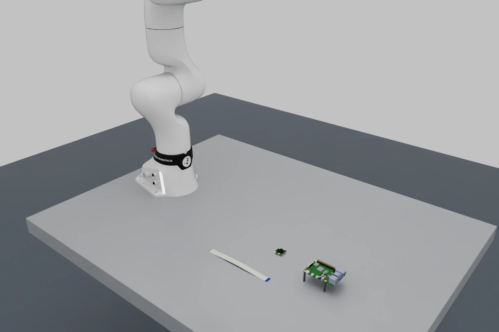
The last saved cell render is shown until the feed connects.
No live frame received yet.
CAMERA DESIGN · SIMULATION REFERENCE
A closer look at the opening.
We added a Basler ace 2 a2A2448-75ucBAS camera with a Kowa LM35JC10M 35 mm lens. The lens front sits 100 mm from the focus target, above the cable at a 25° elevation. Your Arducam reference remains useful for wider views; this camera is for the last few millimetres of approach.
What this gives us
2448 × 2048 pixels over a calculated 17.65 × 14.77 mm field, measured in a plane perpendicular to the optical axis. At 0.38× magnification, sampling is 7.21 µm per pixel. These figures describe image scale, not positioning accuracy.
The focus tradeoff
The starting lens setting is f/8. A thin-lens estimate gives about 0.42 mm total depth of field with a one-pixel blur criterion, before diffraction. We therefore keep the entrance near the focus plane and retain a wider camera for the earlier approach.
The first, diagonal placement made focus vary across the opening. The selected view looks straight across its width while staying above the cable. Compare both below, including the blur sensitivity render. These images have no learned masks or privileged control overlay.
Loading the macro study…
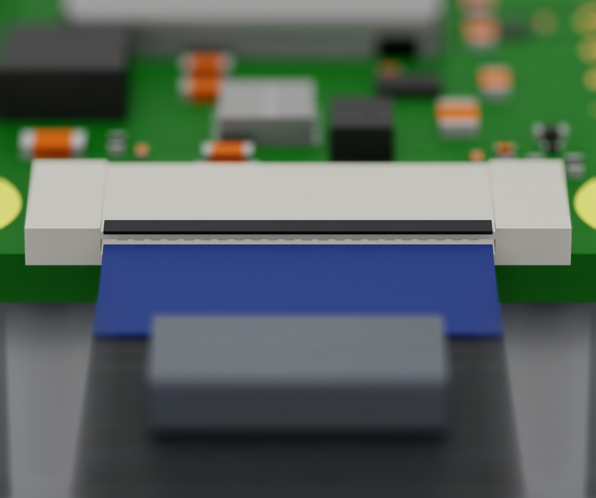
16-second comparison of independent static poses. No physical insertion occurs. Finite-aperture rendering is a sensitivity model and includes renderer artifacts; sensor noise, lens MTF, diffraction, Bayer response and exposure radiometry are not calibrated.
How it joins the perception pipeline
The target settings are 30 fps, 500 µs exposure, zero gain and locked focus and white balance. They have not been commissioned on hardware or achieved by this renderer. Native RGB and matching calibration will use /cell/cameras/macro/image_raw and /cell/cameras/macro/camera_info, with macro_optical_frame. These are reserved ROS 2 interfaces; a running publisher is still to be integrated.
The existing DINOv3 model was trained with another camera and crop. We have explicitly marked this macro profile incompatible with that checkpoint. The next perception milestone is a separate macro dataset, preprocessing contract and frozen-model evaluation. Robot motion remains disabled.
Sources, assumptions and review data
Camera specifications: Basler documentation. Lens magnification, working distance and dimensions: Kowa specifications. We use a thin-lens equivalent projection with an inferred principal plane; this is not the lens optical prescription. The connector opening uses the documented simulation assumptions from the feature study.
Selected camera report and optical budget · Diagonal comparison · Image manifest
STEP 1 · DINOv3 FEATURE PERCEPTION
Find the opening, not just the connector.
We now train separate predictions for the upper and lower entrance rims, a narrow band at the cable's leading end, and the slider in two positions. DINOv3 supplies pretrained image features; a task-specific decoder learns from simulated RGB. The inference container cannot read meshes, object poses or annotations.
Loading the frozen feature experiment…
| Feature | Pooled IoU | Mean visible-view IoU | Boundary F1 / 2 px | False positives / absent views |
|---|
A feature needs eight labelled pixels to count as visible. Two pixels is an image-space review tolerance, not insertion clearance. The leading-end band is 0.3 mm long; estimating the exact edge and a 3D tip frame is still separate work.
Orange: upper rim · Cyan: lower rim · Green: leading band · Pink: extended slider · Purple: retracted slider. Colours appear only in review overlays.
All 96 test views, one independent static frame per second. This is perception review, not continuous tracking or robot motion.
What changed in the connector, and what is assumed?
The source CAD has one fused connector mesh and no independently movable latch. The manufacturer identifies a sliding actuator. We retained the PCB and replaced that connector with an engineered simulation substitute: separate housing rims, bottom contacts and a sliding part.
The 11.7 mm-wide, 0.5 mm-high slot and 0.8 mm actuator travel are explicit assumptions. They are not manufacturing tolerances. The slider's appearance changes with position, but it does not yet clamp the cable. Finger contact, cable deformation and insertion are not part of this static experiment.
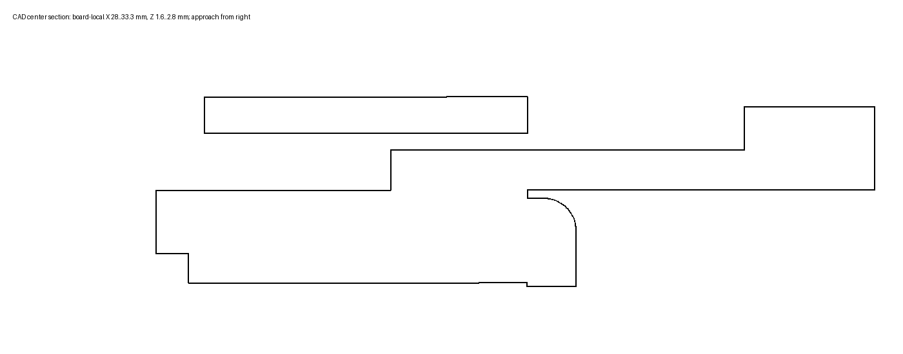
Original CAD cross-section, before the engineered substitute. This audit prevents us from treating a detailed exterior as a complete insertion mechanism.
How the test stays independent
120 development scenes supply 192 training and 48 validation images. Validation selects the checkpoint. Only after the model is frozen do we generate 48 new test scenes, viewed by both cameras. Tests include lighting changes, rotation, fingers, digital blur and absent parts. These results are specific to the authored geometry and ideal reference optics.
Next, simulation mechanics must pass thickness/contact, bending, friction and numerical-convergence tests before we connect perception to action. Real-hardware work is deferred; it does not block further simulation.
Full evaluation · Training record · Geometry assumptions · CAD audit · Attribution
STEP 1 · SIMULATED VISIBILITY
Can we still see the end when we hold it?
We screened 36 finger arrangements against the two close-up cameras, with three matching no-finger baselines. Holding farther behind the tip may expose more cable while making it less supported. This study measures the visibility side of that tradeoff.
Loading the visibility study…
Orange labels the connector body; green labels the mini-end contacts and stiffener. Neither label isolates the socket opening or leading edge. A high retained-pixel percentage cannot establish that those critical features are visible.
39-second sweep, one static arrangement per second. The cable is rigid, the finger gap is 0.5 mm and there is no grasp contact. Distances refer to the CAD review point, not a qualified insertion plane.
Our next simulation step separates entrance rims, a 0.3 mm band at the cable's leading end, and slider position. Mechanics will be qualified with independent numerical tests before this scene becomes a contact experiment. Real-hardware work is deferred and does not block the simulated proof of concept.
Every configuration and pixel count · Milestone and test protocol · Image attribution
RELIABILITY PASS / FROZEN TEST
Better cable ends. A reason to stop.
The first model often found the cable while missing its small end. This pass gives each image’s mini end more weight during training, adds difficult development scenes, and compares two independently trained heads. A new review gate can say “need another view” when evidence is weak.
Loading the independent reliability evaluation…
DEVELOP / 200 SCENES
Make small regions count.
160 training scenes and 40 validation scenes, each seen by both cameras. Per-image class-balanced losses stop large masks from dominating the objective. Each head’s checkpoint is selected using mean cable-end overlap across visible validation images.
CALIBRATE / 80 SCENES
Choose when to abstain.
A separate set chooses a threshold for each camera. Agreement and image-derived confidence rank the views. If no threshold gives at least 20 accepted examples without an observed bad acceptance, that camera always abstains.
TEST / 120 SCENES
Measure accepted mistakes.
Models and thresholds are frozen before these new scenes are captured. We compare the earlier DINOv2 model on the same images. We report useful coverage and mistakes among accepted views, including every failure.
We fixed a supervision bug before training
Two development attempts were rejected after the simulator’s semantic lookup mislabelled absent or visible cable pixels. The replacement uses renderer instance IDs mapped to mesh paths offline. A separate geometric containment audit checks that mini-end labels stay within the projected cable-end envelope. Failed captures remain excluded; no bad labels were silently erased.
The same containment check also passes the earlier published development and test datasets. It checks label consistency, not physical connector accuracy.
Eight-second annotation audit: raw RGB, rejected labels, corrected labels. Green covers the small end only; it must not cover the whole cable. These are offline annotations, not model predictions.
Did the cable-end masks improve?
| Model / same 240 test images | Foreground mean IoU | Mini-end pooled IoU | Mini-end mean per visible view | Visible views with IoU ≥ 0.5 |
|---|
The per-view score gives a tiny visible end the same weight as a large one. Pooled overlap still appears alongside it, so neither measure can hide the other.
How often can we trust a component review?
For this experiment, a “good” review means both the connector assembly and mini end are visible and each predicted mask overlaps its label by at least 75% IoU. This is a component-mask criterion. It says nothing about aperture clearance, a physical leading edge or insertion accuracy.
| Camera | Threshold | Accepted / total | Bad accepts / accepted | Nominal error upper limit | Good reviews retained |
|---|
The upper limit is a one-sided 97.5% exact binomial bound for each camera, allowing 95% joint coverage for the two cameras only under independent draws from this synthetic scene generator. The two views of a scene are not counted as independent trials in one combined bound. This is not a real-world reliability guarantee. With no accepted examples, error is unknown rather than zero.
Inspect the decisions, including mistakes.
Stress the view and the camera connection.
| Condition | Views | Accepted | Bad accepts |
|---|
The input boundary rejects stale, repeated, reordered or malformed packets and calibration mismatches. Constant black/white images and extremely low image detail trigger abstention. These replay probes do not validate a physical camera driver or real-time freshness.
Static-scene montage: the first view from each condition/camera combination and every wrongly accepted view. Raw RGB on the left; new masks and the review decision on the right. No grasp, insertion or robot motion is shown.
Why acceptance still does not allow insertion
The two heads share a pretrained encoder and training data; they can agree on the same error. Their softmax and agreement scores are ranking signals, not calibrated success probabilities. Thresholds were selected on calibration data and evaluated once on the test set. Test mistakes remain failures; thresholds have not been quietly adjusted to remove them.
The same fixed native-pixel windows and simulated Arducam reference remain in use. Blur is a digital image stress transform, not a measured lens model. Jaw boxes, static cable shapes, ideal optics and community CAD still limit realism. The connector-mouth geometry, latch state, actual lens focus and cable deformation need physical validation.
Every runtime output keeps motion disabled and leaves insertion pose and latch state unknown. The next physical gate is measuring and imaging a real connector entrance and cable end at the intended working distance, followed by a gripper occlusion sweep. Reliable component review is useful evidence for that work, not permission to skip it.
Full test report · Frozen thresholds and calibration results · Training record · All test views · Image attribution
CAMERA-ONLY LEARNING / ZERO 2 W
Find the parts before aiming the cable.
The new model reads two simulated camera views: one facing the side-entry connector, the other looking across the approach. A frozen DINOv2 ViT-B/14 backbone supplies pretrained visual features; a small decoder combines them with native-resolution RGB detail. We compare it with an RGB-only decoder trained on exactly the same scenes.
This is a local component-recognition experiment. The orange region is the visible connector assembly, not its entrance. The green region is the visible mini-end stiffener and contacts, not a verified leading edge. Aperture, latch state and insertion pose remain unknown. Motion stays disabled.
01 / OBSERVE
Keep the native pixels.
Each B0498 reference camera renders 3840 × 2160 RGB. Both models use the same fixed 896 × 448 window around the optical centre. No label or CAD pose chooses the crop. This assumes a fixtured working volume; finding a loose cable across the desk is still a separate stage.
02 / LEARN
Freeze before testing.
64 training scenes and 16 validation scenes, each seen by both cameras. The decoder checkpoint is selected using validation overlap. A fresh 36-scene test set is captured only after both models are frozen.
03 / CHECK
Count misses and false alarms.
The isolated inference worker receives RGB, calibration and frozen weights. A separate offline scorer reads simulator labels. Empty views, tool occlusion, lighting and pose changes expose failures that average overlap can hide.
Inspect every held-out view.
Start with the raw camera window, then switch layers. Colours identify visible components; they are not grasp points or insertion targets. The virtual macro camera is excluded from training and testing.
Loading the held-out review…
Does the pretrained backbone help?
Foreground mean intersection-over-union, pooled per class. The test split follows the development distribution, including a few absent-object controls. The challenge split adds deliberate stress cases. Neither split contains real camera images.
| Model | Test / 40 images | Challenge / 32 images | All / 72 images | Median compute |
|---|
Where does it fail?
The mini end still needs work: only 36 of 59 visible views reach 50% overlap. DINOv2 also produces one connector false alarm across ten absent-connector views. We cannot use these masks as reliable physical endpoint estimates.
| DINOv2 class | All-image IoU | Visible views with IoU ≥ 0.5 | False alarms / absent views |
|---|
| Condition | Images | DINOv2 mean IoU | RGB-only mean IoU |
|---|
A visible class has at least 16 labelled pixels. A false alarm requires a predicted connected component of at least 16 pixels. Means exclude classes with no predicted or labelled pixels. Correct empty views are not localization successes. Compute timing excludes capture and image decoding; these are sequential single-camera windows, not a validated 15 fps control loop.
36-second review: selected test views and every challenge view, one static scene-camera window per second. Raw RGB on the left; DINOv2 overlay on the right. This is an inspection montage, not robot motion.
Read the assumptions and the next gate
The renderer varies board pose, cable offset and presentation, light intensity and simple jaw envelopes. It does not model a functioning grasp, insertion contact, calibrated exposure, sensor noise, distortion, rolling shutter or measured cable deformation. The mouth and latch in the community CAD have not been physically qualified. The stock lens’s close-focus performance still needs a real bench check.
The next gate is physical observability: measure a real Zero connector and cable, photograph the open entrance at the intended working distance, then check whether the upper/lower rims and cable leading edge remain visible through a gripper approach. Only verified entrance and edge labels should train the next head. A high component score does not satisfy that gate.
Full evaluation and model hashes · Every held-out view · Training record · Official DINOv2 source · Image attribution
NEW WORKPIECE / PI ZERO 2 W
The same skill, entering from the side.
The Zero 2 W adds the sideways example we wanted. Its camera socket opens at the board’s edge, so the cable approaches parallel to the PCB. The Pi 4 example enters from above. Both remain ribbon-insertion tasks; the later phone-style press-on connector is a separate problem.
Pi 4 · downward
Upright CSI socket. A 15-pin end at 1 mm pitch. The cable end stands vertically during final entry.
Zero 2 W · sideways
Side-entry CSI socket. A 22-pin end at 0.5 mm pitch. The cable end stays parallel to the board during final entry.
We imported a named Zero 2 W assembly from Optocam Zero: 94 components and 478,024 triangles, including the side-entry connector and small board components. Its 65 × 30 mm outline and 58 × 23 mm mounting-hole pattern pass checks against Raspberry Pi’s drawing. That validates the board layout, not the connector’s fit or latch mechanics.
Inspect the board and its entrance before the cable arrives. Click any image to open the native 4K frame.

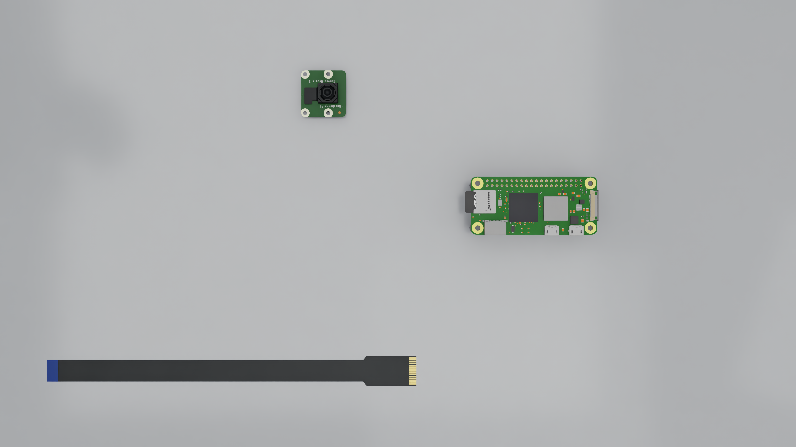
B0498 / IMX585 reference, 16 mm lens, ideal projection.

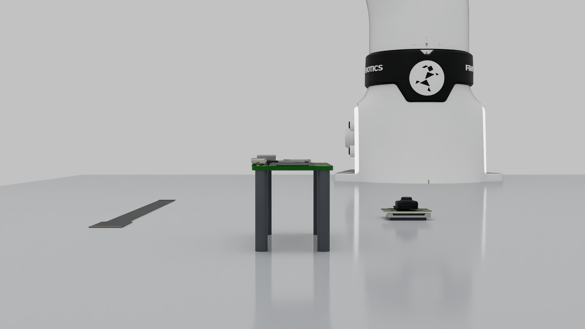
B0498 / IMX585 reference, 16 mm lens, ideal projection.

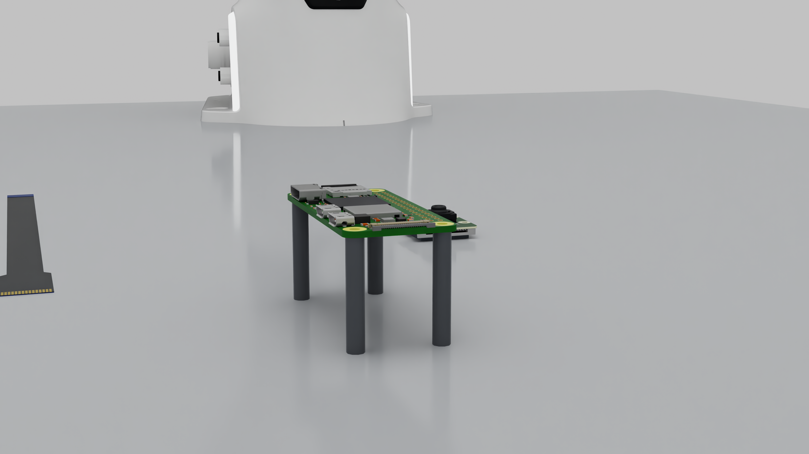
B0498 / IMX585 reference, 16 mm lens, ideal projection.

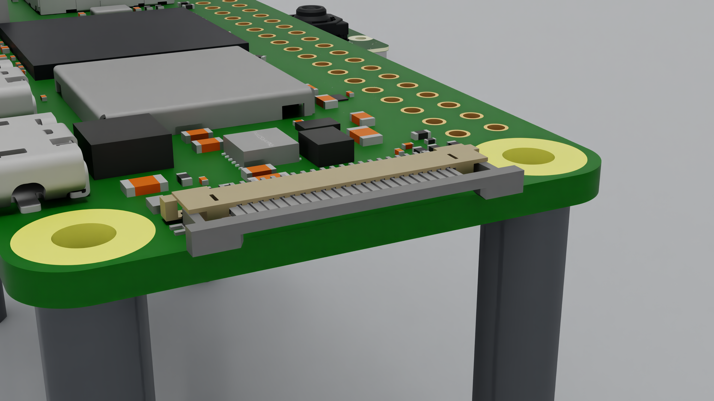
Virtual macro for human geometry inspection; not a deployable Arducam view.
12-second review: three independent static situations, four seconds each. No robot motion, grasp or insertion is shown. The 15 mm and 3 mm gaps are authored distances from a nominal CAD review point, not measured insertion tolerances.
A different cable, with its own measurements.
The selected Standard–Mini 200 mm cable has a 22-pin end for the Zero and a 15-pin end for Camera Module 3. Its revision-two outline stays 11.5 mm wide along most of its length and widens to 16 mm near the camera end. The mesh includes both contact arrays and stiffeners. Thickness, exposed length, stiffener length, the exact taper and the far-end contact face still need specimen measurements. The displayed cable is a static visual model.
The live feed above now shows the Zero cell; select Pi close-up to look toward its side entrance. The three proposed sensor views use the selected Arducam optics. The fourth view is a virtual macro that helps us inspect the CAD. Close-focus sharpness, rolling readout and sensor noise are not yet calibrated, and no learned model has been evaluated on these Zero images.
Sources, checks and what comes next
The connector is named Molex 54548-2271 in the community CAD. The latch remains fixed; its open state, travel, aperture clearance and contact forces are unverified. Before training insertion, we need the real cable end dimensions, physical latch checks, and evidence that the deployed camera sees the entrance while the gripper approaches.
Next perception targets are the visible mouth, upper and lower rims, cable leading edge, exposed face and occlusion. Runtime estimates must come from images and measured sensors. CAD coordinates are used only to construct and audit this static study.
Optocam Zero CAD · Doruk Kumkumoglu · Official board drawing · Cable revision notice · Capture record, camera poses and dimension audit · Image attribution / CC BY-SA 4.0
SELECTED SIMULATION CAMERA / B0498
The manual-focus Arducam, in the cell.
We now use the Arducam B0498 with Sony IMX585 and a 16 mm C-mount lens as our simulation reference. The native review images are 3840 × 2160. This is the Pi 4 mounting study. The live feed now uses the separate Zero layout above, with the same camera reference at 960 × 540; the whole-cell view is a separate observer camera.
The manufacturer lists 4K at 15 fps over USB3. That is a hardware capture mode, not the speed of this renderer. Manual focus stays fixed for each mounted position. These images currently use ideal projection: close-focus reach, depth of field, distortion, noise and rolling-shutter timing are not calibrated.
The lens changes what we can see. At the entrance-facing position, about 319 mm from the target, the nominal horizontal field is 222 mm: roughly 17 pixels per millimetre at native resolution. The earlier 28 mm entrance study used much narrower optics. Digital cropping cannot recover the missing optical detail.
Four candidate mounting positions, all using the selected 16 mm reference. Click an image for its native 4K pixels.

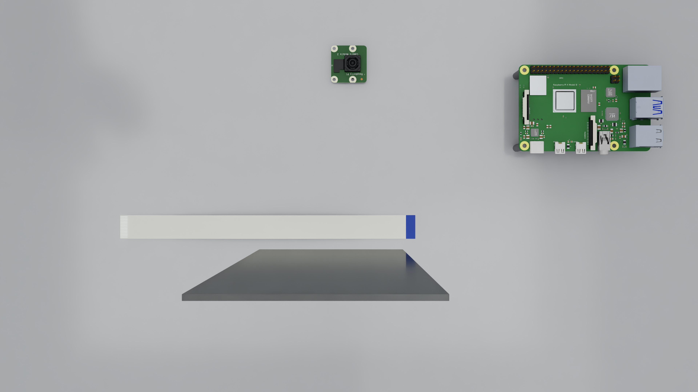

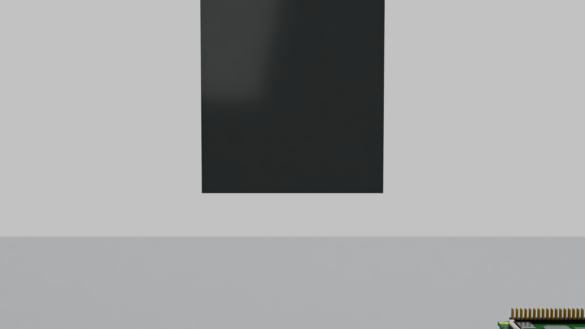

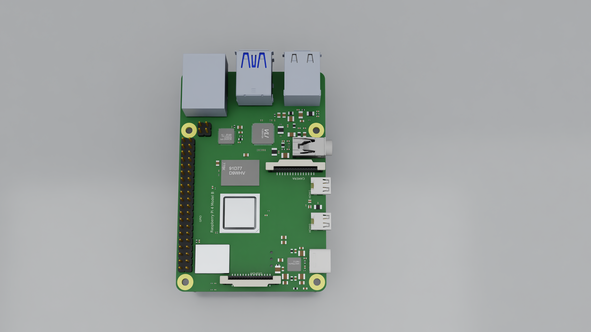

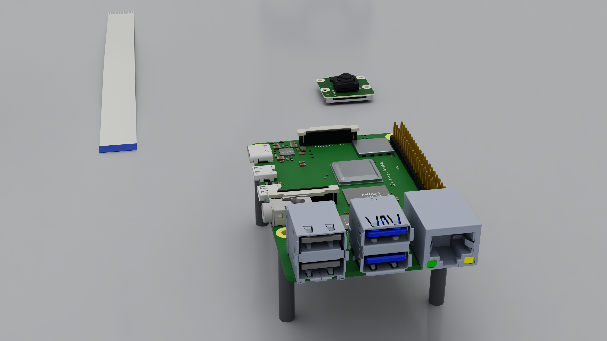
Four static situations, four seconds each. Cable poses and jaw blocks are authored visibility probes; no grasp, insertion or robot movement is simulated. These new optics have not been evaluated with the published segmentation model.
The profile assumes a native-pitch 3840 × 2160 sensor crop, giving 11.136 × 6.264 mm active area. Its rectilinear horizontal angle is about 38.4°; the listing reports 41°. Real intrinsics and close-focus tests will settle that difference. Manufacturer specifications · Capture record and camera poses · Earlier narrow-field entrance audit
FOLLOW THE EXPERIMENT
What changed, and why.
These are concise engineering updates, published as work progresses. Training counters and scores come directly from the running experiment.
- Waiting for the work log…
THE DESIGN DISCUSSION
The choices shaping this system.
Open a decision to see its rationale, the tradeoff and the evidence that would make us change it. These are working decisions, not a finished hardware specification.
01Start with two fixed cameras
Decision. Use a desk overview to find the cable and a board close-up to resolve the two ribbon sockets. The published baseline used ideal 768 × 512 pinhole cameras. The live preview now uses the selected Arducam reference described above.
Why. One overview does not give enough pixels to judge a tiny socket or an exposed cable end. Fixed mounts also make the first calibration and evaluation easier to understand.
Tradeoff. The close-up usually cannot see the loose cable, and neither camera yet represents a purchased lens or measured noise model.
Revisit when. Real images establish the required pixel scale and show where gripper occlusion prevents a usable tip estimate. That may justify another close-up or a wrist camera.
02Learn image regions before commanding motion
Decision. Train a small U-Net to segment cable body, contacts, stiffener, CSI and DSI. Keep the robot stationary.
Why. We can inspect the model’s errors directly and establish that it uses RGB before combining perception with actions.
Tradeoff. A region or centroid does not supply the physical end frame, face orientation, socket mouth or uncertainty needed for insertion.
Revisit when. Endpoint-specific estimates pass held-out real-camera checks against the task’s measured clearance. The next skill is bounded pickup, followed by tactile retention checks.
03Keep simulator truth outside runtime perception
Decision. Simulator labels are offline supervision and evaluation data. The inference container mounts RGB images, a frozen checkpoint and three code files.
Why. Those are inputs we can replace with real-camera images in the lab. Hidden cable or connector poses would invalidate that transfer.
Tradeoff. Ambiguous views must stay ambiguous. Later control needs uncertainty, touch and recovery instead of a simulator-state shortcut.
Evidence. The inference launcher has no label or USD mount, no network and no GPU device. A repeated isolated replay checks prediction stability. This does not yet qualify live synchronization.
04Improve the board with traceable geometry
Decision. Keep the community Pi 4 STEP and official Camera Module 3 STEP. Add 102 small package footprints recovered from the official board drawing, seven approximate labels and materials for existing connector solids.
Why. Board context helps distinguish the CSI camera socket from the similar DSI display socket. Small parts and labels provide visual structure missing from the first import.
Tradeoff. Package height/type and surface finishes remain assumptions. The extra detail does not prove photorealism.
Revisit when. Photos and measurements of the actual board revision reveal geometry, marking or reflectance mismatches. Inspect the before-and-after scene.
05Separate cable appearance from cable mechanics
Decision. Preserve drawing dimensions and opposite exposed faces while varying a static, length-preserving ribbon curve for perception.
Why. We can start testing appearance without claiming an unmeasured deformation model.
Tradeoff. The curve is authored; it has not settled under gravity. This dataset cannot validate bending, friction, buckling or grasp retention.
Revisit when. We measure laminate response, stiffener transitions and contact behavior. A reduced or FEA-informed model must reproduce held-out shapes and forces before contact learning.
06Freeze the model before opening the test set
Decision. Develop on 96 training scenes and 24 validation scenes, with two images per scene. Render 56 new evaluation scenes after checkpoint selection.
Why. Test failures should describe the frozen model rather than guide silent tuning on the benchmark.
Tradeoff. The same assets and camera placements appear across splits. These results measure synthetic scene generalization only.
Revisit when. We add new board/cable specimens and real images. The test protocol then needs explicit specimen and environment splits, larger failure sets and uncertainty calibration.
07Keep the phone connector as its own second task
Decision. Stage 1 is Pi ribbon insertion into an upright CSI socket. Stage 2 is a phone-style flex with a small connector pressed down onto the PCB.
Why. They share observation and robot infrastructure, but need different gripping surfaces, mating mechanics and completion checks.
Tradeoff. The second connector pair is not selected. Hirose BM28 is only a representative candidate, not a claimed phone part.
Revisit when. A matched plug/receptacle, handling specification and replaceable research coupon are chosen. Read the Stage 2 plan.
LATEST PRIORITY / ENTRANCE GEOMETRY
Look into the opening we need to enter.
The whole CSI connector is a useful search region. Its centroid does not locate the insertion opening. The next perception target is the visible aperture and its two long rims, with separate evidence for latch state, cable edge and occlusion.
We added an axial view and two views offset about 11° from the board normal, each with a 28 mm field. These views inspect the current CAD recess directly. They are candidate optical axes, not three additional cameras committed to the lab build. Compare them before choosing the entrance camera; retain a side view for approach height and occlusion.
The entrance annotation audit is being checked. Its image review will appear here when all assets pass.
Green overlays show an offline CAD cross-section annotation, not a learned prediction, an open-latch guarantee or a collision-free insertion path. The probe remains centered on the earlier nominal review point to expose why whole-connector centering is inadequate.

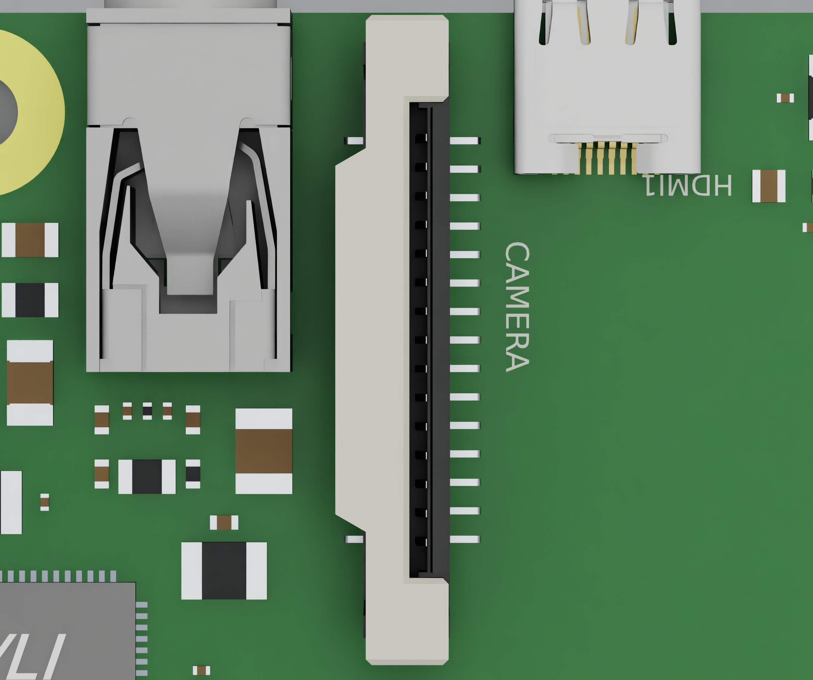

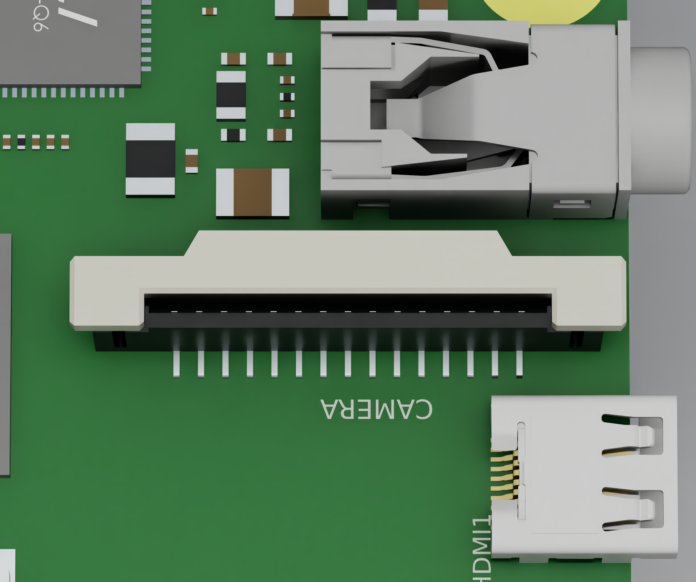

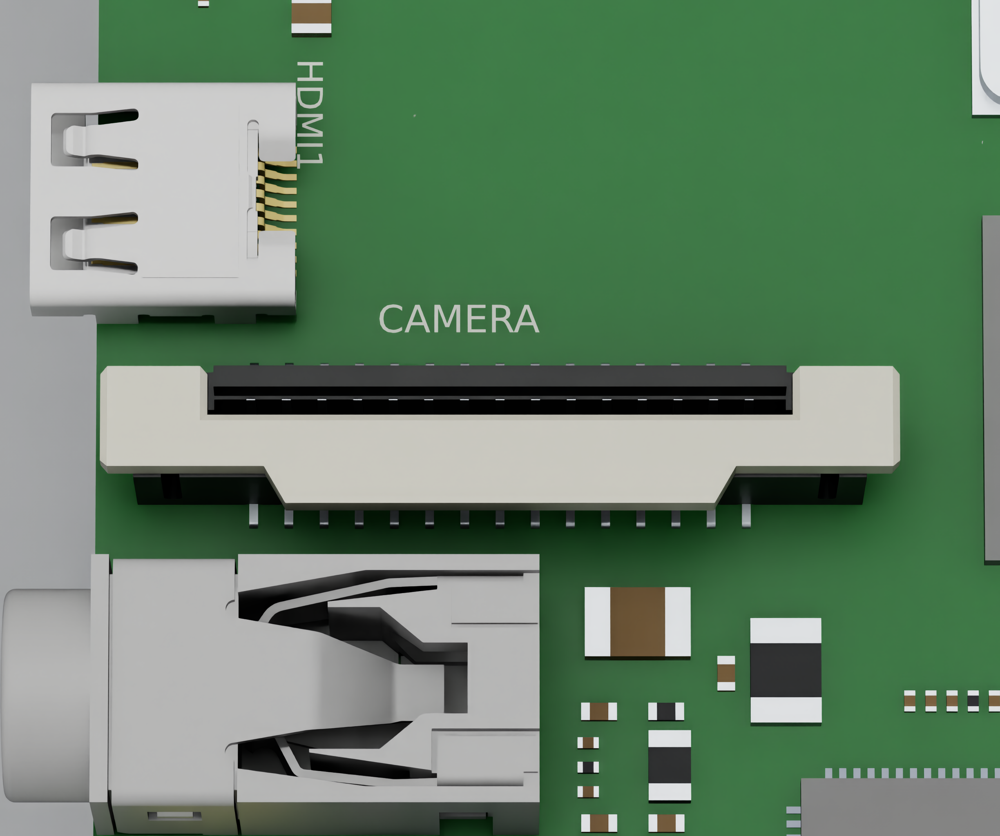
Watch the entrance and occlusion review → · Audit data · Perception contract
The current CAD is still a qualification limit.
Its top view contains a narrow recess. We extract a declared plane 0.10 mm below the housing lip at 25 µm grid spacing, then let the renderer account for visibility through the actual scene. This identifies a CAD feature for label review. The physical mouth dimensions, latch travel and open-state clearance are not verified. A recess is not necessarily the usable entrance throughout the insertion depth.
The annotated recess centroid is about 0.52 mm away in X from the earlier nominal review center. That is a diagnostic of this CAD and annotation definition—not a real-board accuracy result. It confirms that the previous connector-center target was unsuitable for insertion.
What the occlusion test found
The axial view clearly exposes the CAD recess before approach, but the authored cable/jaw probe hides essentially all of it. Small camera offsets retain more evidence, not a complete entrance. These results reject reliance on a single straight-down view through the final approach.
| View | 15 mm-above probe | 3 mm-above probe |
|---|---|---|
| Axial | 0.0% | 1.6% |
| 11° west offset | 48.1% | 26.4% |
| 11° east offset | 22.8% | 8.1% |
Keep an entrance-facing macro view for initial measurement, an oblique view for approach, and redesign the fingers around a clear sightline. The masks also include CAD end recesses; they are not yet a physically verified usable mouth. No camera or gripper arrangement is frozen by this study.
What the entrance model must learn
Keep separate labels for the visible aperture, rim boundaries, latch and housing, cable leading edge, contacts and tool occlusion. Estimate edge locations and uncertainty at native close-up resolution. Score boundary error and false-open/false-aperture decisions in addition to overlap. An occluded entrance must be reported as occluded; an inferred hidden region must not be presented as visible evidence.
The initial view measures the mouth before the cable covers it. During approach, combine observable edges from complementary views with measured robot, tactile and force signals. If uncertainty grows beyond the measured clearance budget, pause and reacquire. Neither simulator masks nor the CAD cross-section may enter the deployed estimator or controller. No entrance model has been trained in this milestone.
Camera identification before the simulation choice
B0498 is now selected for simulation. The exact physical cameras remain unconfirmed; this table records the earlier identification search. A read-only check of the current host found a RealSense D405 on a 480 Mb/s USB link and D415 on a 5000 Mb/s link. No attached USB camera identified itself as Arducam; no camera images were captured. USB enumeration does not identify cameras attached to another computer or a Pi’s CSI port.
| Possible Arducam | Published mode matching the description | Useful identifying detail |
|---|---|---|
| B0471 / B0471C · IMX519 | 3840 × 2160 at 15 fps | 16 MP autofocus USB3 family. Manufacturer listing |
| B0498 · IMX585 | 3840 × 2160 at 15 fps, YUY2 | Rolling shutter; manual-focus 16 mm C-mount lens. The supplied lens’s close-focus suitability still needs checking. Manufacturer specifications |
| B0433 · 12 MP USB2 | 3840 × 3032 at 15 fps MJPEG; 3840 × 2160 at 30 fps MJPEG | Rolling shutter, manual M12 lens. Uncompressed high-resolution mode is much slower. Manufacturer specifications |
If a native 3840-pixel-wide frame covers 28 mm, ideal sampling is 137 px/mm. That is conditional on the lens actually framing and focusing that field; “4K” alone does not provide it. Start with stationary inspection or bounded move–settle–observe trials. At 15 fps, frames are 66.7 ms apart before exposure, transfer and inference delays. Measure the full latency, rolling-shutter distortion, compression and dropped frames before setting motion speed. Lock focus and exposure when supported so calibration remains meaningful.
The first physical capture should verify native modes, pixel scale with a target beside the connector, sharpness across both rims, open/closed latch appearance and tool occlusion. Keep the connected depth cameras as candidates for coarse approach geometry; do not assume their depth resolves the slot.
FIRST PLACEMENT STUDY / REVISION 2
See the cable through the whole task.
The first two cameras were enough to start static segmentation. They were not placed around the gripper, an upright cable or the final approach. This revision assigns a view to each stage, keeps the insertion path open and tests opposing views with a simplified jaw envelope.
Earlier candidate, rendered in Isaac: four fixed 5 MP views, followed by the entrance-axis audit above. These are an optical design study, not connected hardware or a qualified manipulation cell. The published U-Net benchmark uses the original cameras. The live feed now uses the Arducam reference; this earlier study remains available for comparison.
Inspect the candidate views
Switch between four separately authored static situations. The dark blocks are a 4 mm-thick, 12 mm-wide, 3 mm-high jaw envelope. They are not an implemented gripper. The cable is rigidly posed for this visibility study; no pickup, deformation or insertion is being simulated.
Loose cable: use C1 to find the cable. Empty close-up views are expected before presentation or approach.

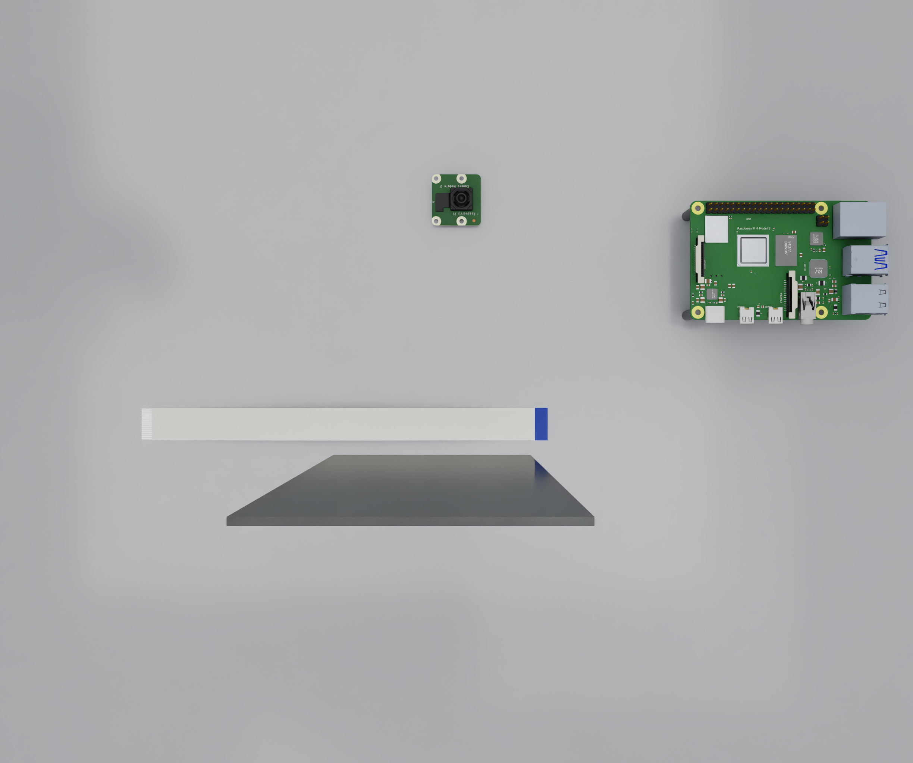


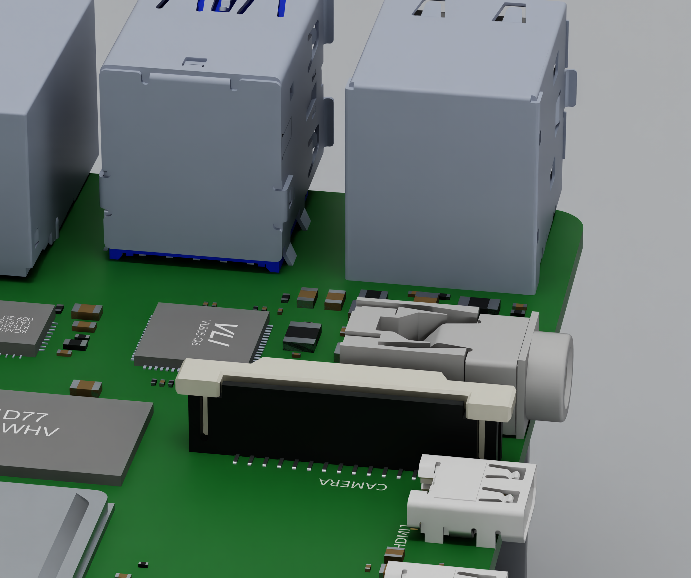

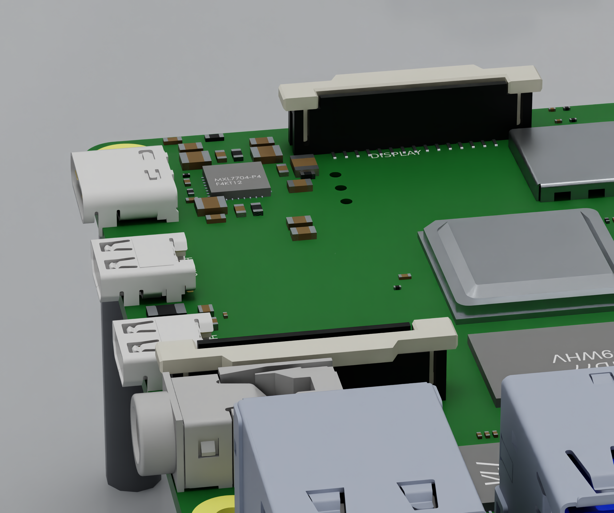
Watch the 16-second stage review → · Download the recorded layout and optical calculations
| Camera | Position (x, y, z) | Target / role | Field at target plane |
|---|---|---|---|
| C1 · overhead | (0.490, −0.170, 0.680) | Loose cable workspace; nearly vertical | 450 × 376 mm; 5.44 px/mm |
| C2 · end inspection | (0.480, −0.570, 0.160) | Presentation tip at (0.480, −0.300, 0.140) | 45 × 37.6 mm; 54.4 px/mm |
| C3 · west close-up | (0.410, −0.170, 0.170) | CSI approach region, about 28° above the board | 45 × 37.6 mm; 54.4 px/mm |
| C4 · east close-up | (0.880, −0.170, 0.170) | Opposite side of the same approach region | 45 × 37.6 mm; 54.4 px/mm |
Pixel scales apply to a plane normal to each optical axis at its aim point. Oblique surfaces, depth and lens blur change useful resolution. An 18.4 µm object-space pixel is not 18.4 µm positioning accuracy. The ideal 6.70752 × 5.61152 mm aperture corresponds to 2448 × 2048 pixels at 2.74 µm pitch. Optical-center distances are not lens-front working distances; physical lens selection must also verify focus, distortion and depth of field. Optical design definitions
Why these positions?
Give the robot an inspection pose
After pickup, bring the reinforced end into C2’s calibrated field. Inspect the contact face, tip edge and grip position, then rotate to see the other face. A fixed inspection camera keeps its geometry stable and avoids adding a bulky camera to the tool. The first render had weak cable/background contrast. The revised study adds a dark backdrop 100 mm behind the presentation plane and a diffuse area light. Their mounting and gripper clearance still need verification. This is a proposed free-space presentation skill, not a requirement for a passive regrasp fixture; we can still compare fixture-assisted handling later.

Watch insertion from both broad faces
The Pi CSI socket accepts the ribbon downward. C3 and C4 look across the upright ribbon from opposite sides, leaving the overhead approach volume open. Their views can reveal different edges when the ribbon or fingers hide the socket. They are complementary views, not an ordinary parallel stereo pair: opposite cable faces do not automatically provide matching features for triangulation.
Keep tactile contact behind the free end
The proposed pinch surface contacts the reinforced region while leaving the leading edge visible and free to enter the socket. A full-size tactile module may be too bulky here. We must measure the cable’s usable stiffener length and design a thin jaw or remote optical readout around it; the rendered blocks only test an assumed envelope. Measure slip and grip retention before transferring to contact control.
Put force sensing in the board’s load path
Support every Pi standoff through one plate carried by a six-axis transducer. A parallel support, taut harness or hard stop touching during normal operation can bypass the sensor. Strain-relieve the board wiring, characterize residual harness forces, and add overload stops outside the normal measurement travel. Mount the vacuum sensor near the suction tip to reduce plumbing delay; fuse pressure with image/tactile evidence rather than treating suction as proof of a stable grasp.
Use controlled light and calibrated timing
Provide diffuse overhead light for pickup and independently adjustable lights at the inspection and socket views. Test crossed polarization on glare-prone surfaces while preserving contrast on metal contacts. Start with global-shutter cameras, fixed exposure and synchronized timestamps; calibrate intrinsics, the multi-camera geometry and the robot frame. The study now includes an authored inspection backdrop and area light. Their intensity is not calibrated radiometry; polarization, physical exposure and timing still need bench validation.
What must pass before we freeze the mounts?
- Replace the jaw envelope with the selected actuator, fingers, tactile package and cable routing. Sweep the full approach and retreat with the FR3, including camera bodies and brackets.
- Across pose, grip-depth, yaw and cable-bow variation, measure whether the leading edge and relevant socket boundaries remain observable. Include deliberate occlusions and require the estimator to stop or request another view when information is missing.
- Use real calibration targets and a real ribbon sample to measure scale, focus, glare, distortion and repeatability throughout the working volume. Start with a provisional 0.10 mm edge-localization development target; derive the final requirement from measured connector clearance.
- Validate tactile retention and fixture force noise independently. Train and evaluate the stronger vision model only after the sensor design has passed these checks.
Original cameras used by the published baseline
CURRENT SETUP / PROPOSED LAB HARDWARE
The original two-camera baseline
Today’s perception inputs are two simulated RGB cameras. No physical camera has been calibrated or integrated into this experiment. A later read-only USB check found a RealSense D405 and D415 attached to the host; their placement is unknown and no frames were captured. No tactile sensor or force transducer has been integrated. The Camera Module 3 lying on the desk is the part we will connect to the Pi; it is not one of the observation cameras.
The numeric placements below are authoritative. The schematic does not show lens distortion or calibrated fields of view.
| View | Position (x, y, z) | Looks toward | Image / optics | Used by the model? |
|---|---|---|---|---|
| C1 · Desk overview | (0.500, −0.200, 0.640) | (0.500, −0.140, 0.005) | 768 × 512; 42 mm virtual focal length | Yes · cable and board context |
| C2 · Board close-up | (0.640, −0.245, 0.220) | (0.6425, −0.112, 0.035) | 768 × 512; 50 mm virtual focal length | Yes · CSI versus DSI |
| C0 · Human cell overview | (1.400, −1.400, 1.250) | (0.300, −0.020, 0.420) | 960 × 640; 28 mm virtual focal length | No · live dashboard only |
All use an ideal 36 × 24 mm image aperture. These virtual focal lengths are not lens purchase recommendations. Live previews of C1/C2 use 960 × 640; the recorded learning dataset uses 768 × 512. The board camera is about 19 cm above the PCB and views it about 36° away from its normal.
The overview is too coarse for contact metrology.
At the nominal cable position, its 1 mm contact pitch spans roughly 1.4 pixels and a 0.7 mm conductor is about one pixel wide. That estimate comes from the ideal camera geometry. We need higher pixel density and a close-up of the physical end before reliable edge/face estimation; enlarging this image after capture cannot restore the missing information.
What I would put on the physical bench
The user already owns Arducams, reported as approximately 4K at 15 fps. We will evaluate those first; their exact models, count and lenses are not yet identified. The industrial-camera shortlist below is an alternative, not a purchase decision. Lens working distance, field of view, pad clearance and force range still need to be matched to our samples.
| Component | Proposed placement | Purpose and current status |
|---|---|---|
| Four fixed colour cameras in the revised candidate; Basler ace 2 a2A2448-75ucBAS is a candidate | One overhead stand, one end-presentation stand and two opposing CSI close-up stands | 5 MP, global shutter, USB3; choose lenses from measured pixel scale and working distance. Not installed. Manufacturer specifications |
| Optical tactile pad; DIGIT-family research option | Contact surface of a pinch finger, touching the reinforced cable end | Contact patch and slip evidence. Tool packaging and gel response must be tested; it is not a qualified drop-in replacement for a thin jaw. GelSight DIGIT |
| Six-axis fixture transducer; ATI Nano17 candidate | Under a common Pi support plate, so every support loads the sensor | Measure insertion/contact forces independently of arm dynamics. No parallel fixture load path should bypass it. Range, noise and overload protection need bench checks. ATI specifications |
| Vacuum pressure / flow measurement | Near the suction tip, in the gripper’s vacuum circuit | Seal and leakage evidence during desk pickup. Exact sensor and plumbing are not selected. |
| Gripper position plus FR3 joint/torque telemetry | Gripper actuator and robot’s native sensing | Opening, robot configuration and coarse contact monitoring. These are not being consumed by the current RGB model; none establishes electrical seating. |
| Electrical function / continuity checks | Pi/camera interface and later an accessible test coupon | Verify the final connection after seating, latch and safe power sequencing. Not implemented. |
NEXT MODEL COMPARISON
We should use stronger pretrained vision.
The U-Net is a reproducible first baseline, not a commitment to a small model for the finished robot. My preferred next comparison is a pretrained dense-feature backbone with task-specific segmentation and endpoint heads, alongside a promptable segmentation model for proposals and annotation assistance. Better performance on this task must be measured.
| Candidate | Role in this task | What still needs work |
|---|---|---|
| DINOv3 ViT-B/16 + dense task heads | Learn CSI/DSI context, ribbon regions and end/edge features from a pretrained representation. Start with a frozen encoder, then compare limited fine-tuning. | Its features need a decoder, high-resolution boundary refinement and physical endpoint supervision. Official checkpoints require approved access. Official repository |
| SAM 3 / SAM 3.1 | Text/exemplar-driven region proposals and assisted real-image annotation; video tracking later. The 3.1 release adds improved multi-object tracking. | Does not automatically provide the mating frame, contact face or calibrated clearance. Runtime prompts must come from images or a declared human interaction, never perfect simulator boxes. Official checkpoints are gated. Official repository and access instructions |
| DINOv2 ViT-B/14 + the same task heads | An available pretrained comparator if DINOv3 checkpoint access is not yet available. | Benchmark with the same image contract and declared train/validation splits. This is an alternative to evaluate, not a claim that it already outperforms the baseline. Official models |
Proposed inference sequence: find cable and board regions from RGB → inspect high-resolution end/socket crops → estimate physical edges, face and uncertainty → fuse tactile/force evidence during a later bounded skill. Crops must come from the model or a fixed calibrated view, not ground-truth coordinates.
We will compare per-class overlap, endpoint/orientation error, absent-object false positives, occlusion recovery, real-image performance, latency and peak GPU memory. Today’s held-out set is now visible, so model development must not quietly tune to it; use fresh evaluation scenes and a separate physical holdout. The Zero DINOv2 experiment above now measures the available pretrained comparator against an RGB-only ablation. Its different workpiece, labels and views prevent a direct score comparison with the earlier Pi 4 U-Net.
Where today’s work fits.
Observe
Fixed RGB views
Timestamp and calibration checks
Recorded image ingress
Interpret
Learned class masks
Held-out evaluation
Next: end pose and uncertainty
Act and verify
Bounded FR3 commands
Tactile retention and contact
Electrical completion checks
Offline annotations supervise and score perception. They do not enter a future actor, critic, reward or stage transition. The dashboard displays experiment evidence; it does not control the arm.
Keep your questions beside the experiment.
Use this space to note what you want to challenge or try next. Notes stay in this browser until you copy them into our chat; this page does not send them to the agent.
Useful next discussion: camera pixel scale, real-board photos, a close-up endpoint view, and the tactile evidence we need before pickup.
Keep the evidence in view.
What is built
Imported Pi and camera CAD, drawing-based scene refinement, dimensioned cable geometry, static camera capture, supervised segmentation training and a separate RGB inference process. Current run status and results appear above as each step finishes.
What is still open
Real-camera validation, contact and latch geometry, calibrated cable mechanics, tactile sensing, reliable end-pose estimates and an uncertainty-aware action policy. No insertion result is claimed for this Pi scene.
Detailed perception results · Hardware inspection · Source and experiment records
How this live page works
A read-only service on the research machine publishes curated status and timestamped renderer snapshots. The page polls every two seconds. A paused renderer retains its last frame; the status explicitly changes to a saved frame as it ages. Dataset capture can publish new scene views as it runs.
The public connection uses a temporary Cloudflare Quick Tunnel. It works while the machine and tunnel service are running; the hostname can change after a tunnel restart. The GitHub page remains the stable entry point. No terminal, arbitrary files or robot command endpoint is exposed.